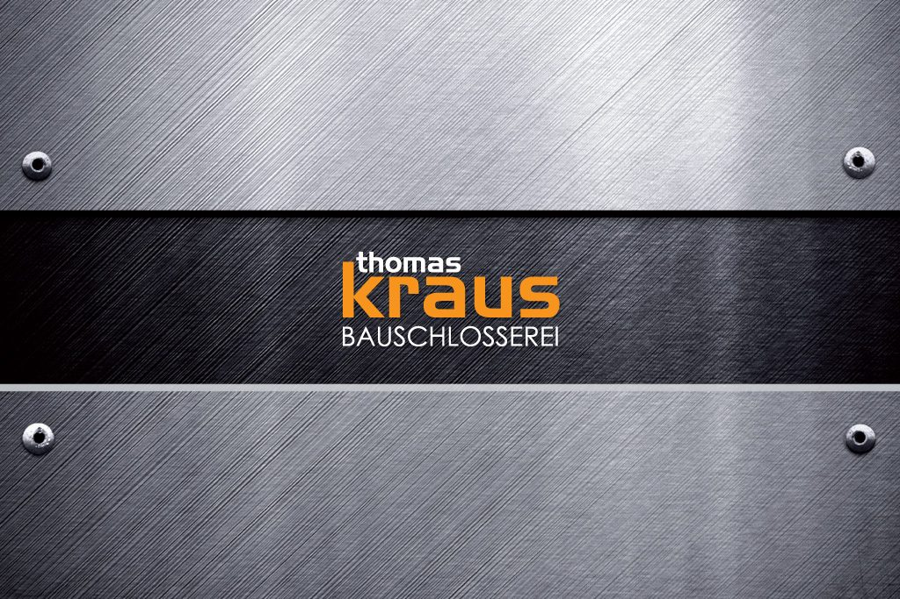
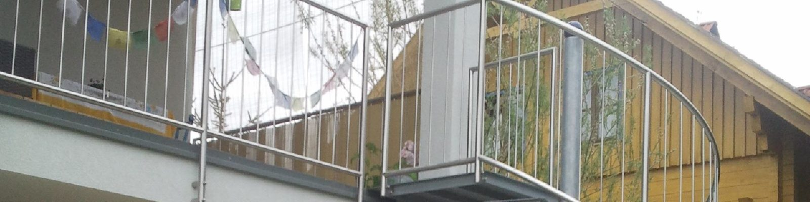

Firmenleitung
Thomas Kraus
Arbeitet als Chef auch persönlich mit – sowohl handwerklich als auch bei kreativen Ideen und Entwürfen oder im Büro, etwa bei der Angebotsstellung.
Über uns
Seit 2005 im Metallbau und in der Bauschlosserei – spezialisiert auf die Fertigung und Montage handwerklicher Metallarbeiten am Bau.
Der Betrieb
Unser Betrieb arbeitet seit 2005 in den Bereichen Metallbau und Bauschlosserei. Unsere Auftraggeber sind neben Privatkunden auch öffentliche Einrichtungen und Firmen, Architekten, Planungsbüros und Baufirmen.
Egal ob größere oder kleinere Projekte, ob privat oder gewerblich, ob in der Region oder in anderen Teilen Österreichs – alle Aufträge werden bei uns verlässlich und zu fair kalkulierten Preisen durchgeführt.
Der Betriebsstandort liegt in der Gewerbestraße 2 in Aichkirchen im Bezirk Wels-Land. Von hier aus fertigen und montieren wir.

Das Team
Firmenleitung
Arbeitet als Chef auch persönlich mit – sowohl handwerklich als auch bei kreativen Ideen und Entwürfen oder im Büro, etwa bei der Angebotsstellung.
Werkstatt & Montage
Drei erfahrene Facharbeiter unterstützen bei allen Bauvorhaben – von der Fertigung in der Werkstatt bis zur Montage auf der Baustelle.
Büro
Im Büro sitzt die Frau des Chefs: erste Ansprechpartnerin für Anfragen, Termine und Abwicklung.
Unsere Stärken
Wenn der Entwurf noch fehlt, entwickeln wir ihn mit Ihnen – der Chef zeichnet selbst mit.
Fair kalkuliert, nachvollziehbar aufgeschlüsselt, ohne Überraschungen am Ende.
Große und kleine Projekte, privat und gewerblich, in der Region und österreichweit.
Zugesagte Termine werden gehalten – auch dann, wenn es auf der Baustelle eng wird.
Wir sind für unsere Kunden immer gut erreichbar – am Handy, per Mail, im Büro.
Aufmaß, Fertigung, Oberfläche und Montage laufen über denselben Ansprechpartner.
Mitarbeiten
Wir sind ein kleines Team mit kurzen Wegen und abwechslungsreichen Aufträgen: Geländer, Stiegen, Vordächer, Sonderkonstruktionen – heute Werkstatt, morgen Baustelle.
Aktuell ausgeschriebene Stellen gibt es keine dauerhaft auf dieser Seite. Wenn Sie Metall-Facharbeiterin oder Metall-Facharbeiter sind und in der Region arbeiten möchten, melden Sie sich einfach – wir schauen, ob es passt.
